NEW RELEASES
新作・正式版になったタイトル
この1年以内に発売・正式版になったタイトルと、早期アクセス中のタイトルです（人気順ではありません）。
GAME LIST
ゲーム別おすすめPC
ゲーム名やジャンル、PCの負荷、予算から絞り込めます。カードの「PC予算」は、各ゲームの「迷ったらこれ」構成の目安です。
-
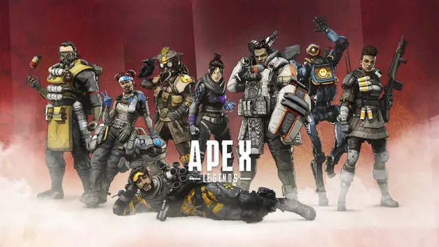
APEX Legends
公式推奨はGTX 970級と軽め。144fps以上を安定させたいならCPUにも余裕を。
-
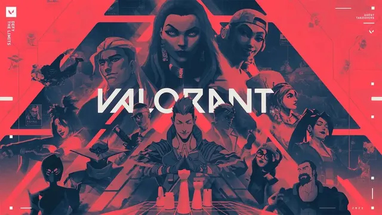
VALORANT
Riot公式の144fps目安はGTX 1050 Ti級。高額GPUよりCPUとモニターに予算を。
-
FINAL FANTASY XIV
グラフィックアップデート後に公式推奨はRTX 2060へ。人が集まる場所ではCPUも効く。
-
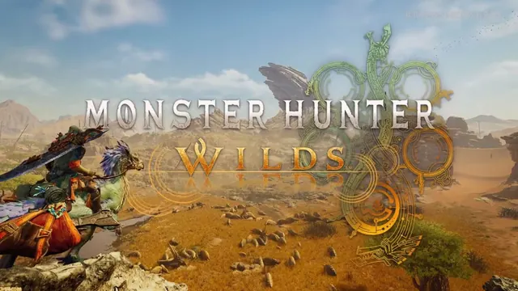
モンハンワイルズ
公式推奨でもフレーム生成込みのFHD 60fps。VRAM 8GBだと高解像度テクスチャは厳しめ。
-
GTA5 / GTA Online
Enhanced版の公式推奨はRTX 3060。Legacy版はさらに軽く、MOD次第で要求が跳ね上がる。
-
Cyberpunk 2077
レイトレなしなら中堅GPUで遊べる。パストレーシングを使うと必要性能が一気に跳ね上がる。
-
Fortnite
パフォーマンスモードなら軽く、Lumen・Nanite有効の高画質では一気に重くなる。
-
Minecraft
2026年7月にJava版の公式推奨が引き上げ（VRAM 6GB・メモリ16GB）。影MODはさらに重い。
-
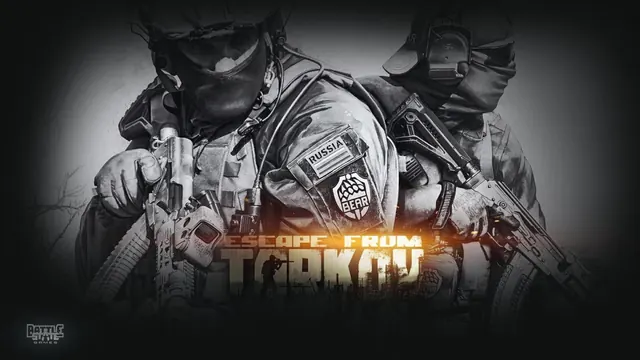
Escape from Tarkov
1.0の公式推奨はメモリ64GB・Core i7-14700F。GPUよりCPUとメモリが効くタイトル。
-

Battlefield 6
最新作BF6の公式推奨はRTX 3060 Ti級。TPM 2.0とセキュアブートの有効化が必須。
-

Call of Duty
BO7とWarzoneが対象。MW4（公式推奨RTX 3060 Ti）は個別ページで解説しています。
-
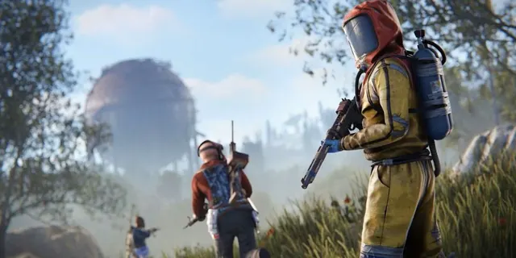
Rust
公式推奨はRTX 3060・メモリ16GB。人の多いサーバーや大型拠点ではCPUとメモリが効く。
-
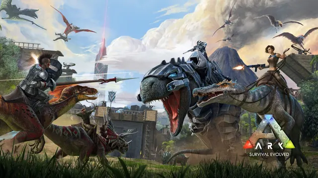
ARK: Survival Evolved / Ascended
旧作ASEは軽め、UE5版のASAは公式推奨RTX 3080・メモリ32GBの重量級。まずどちらか確認を。
-
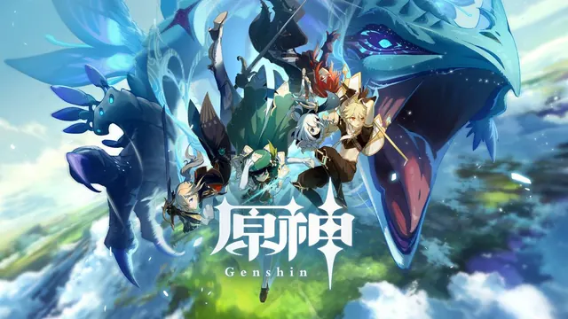
原神
PC版は軽めで、入門クラスでも高画質が狙える。WQHDで綺麗に遊ぶならミドル級。
-
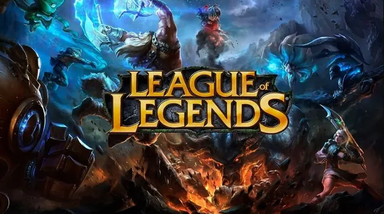
League of Legends
公式推奨はGeForce 560・メモリ4GBと非常に軽い。ゲーミングPCは配信や他ゲーム用と考えて。
-
Overwatch（旧Overwatch 2）
2026年2月に名称が「Overwatch」へ。公式推奨はGTX 1060級で、240fpsはCPU次第。
-
ELDEN RING
ゲーム内のfps上限は60。高fps用の高額GPUより、60fpsを落とさない安定性を重視。
-

PUBG: BATTLEGROUNDS
公式推奨はGTX 1060 3GB・メモリ16GB。競技では画質よりfpsの安定を優先。
-
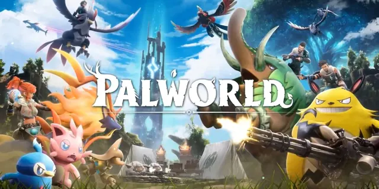
Palworld
2026年7月に正式版1.0が配信。公式推奨はRTX 3060 Ti・メモリ32GB。
-
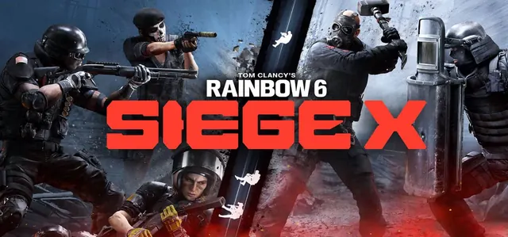
Rainbow Six Siege X
現行のSiege Xは公式推奨RTX 2060・メモリ8GB。高fpsで撃ち合いの見え方が変わる。
-
Starfield
公式推奨はRX 6800 XT / RTX 2080とGPU要求が高め。都市部ではCPU負荷も大きい。
-
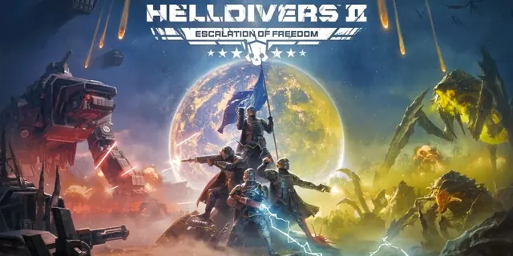
HELLDIVERS 2
公式推奨はRTX 2060・Core i7-9700K。敵と爆発が増える高難度ほどCPUにも負荷がかかる。
-
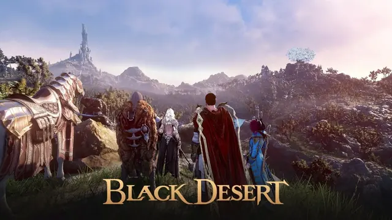
黒い砂漠
画質モードで負荷が激変。リマスター以上の高画質や人の多い拠点戦では性能差が出る。
-
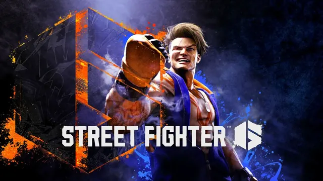
ストリートファイター6
対戦は60fps固定。144fpsを狙う必要はなく、60fpsを絶対に落とさない構成が正解。
-

ARMA 3
古いゲームでも大規模ミッションやMODではCPUが限界に。GPUを盛っても伸びにくい。
-
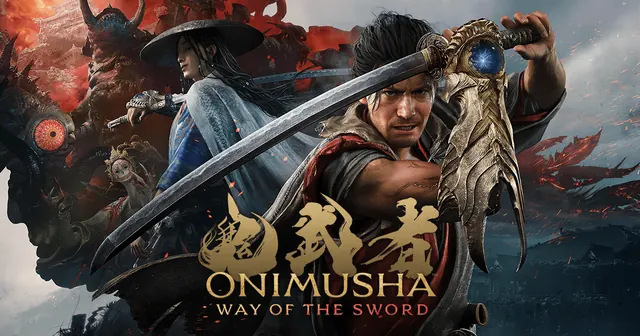
鬼武者 Way of the Sword
2026年9月発売。公式推奨はRTX 2060 Superで「中設定・アップスケーリングでFHD 60fps」。
-
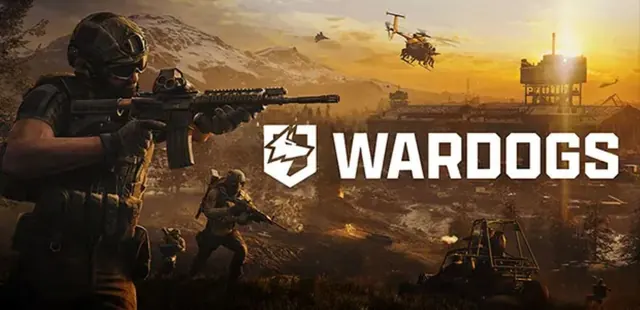
WARDOGS
2026年9月に早期アクセス開始。100人・3チームの大規模戦で、公式推奨はRTX 3070。
-
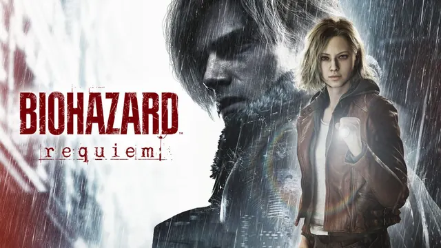
バイオハザード レクイエム
公式推奨はRTX 2060 Superで「720p描画をアップスケールしてFHD 60fps」。パストレーシングは別格に重い。
-
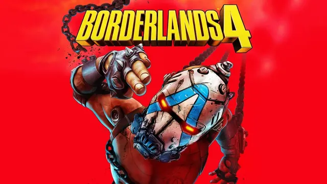
ボーダーランズ4
最低でも8コアCPU・VRAM 8GBが必須。公式推奨はRTX 3080・メモリ32GBの重量級。
-
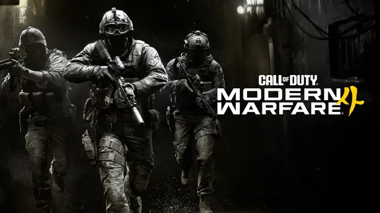
Call of Duty: Modern Warfare 4
2026年10月23日発売。公式推奨はRTX 3060 Ti（高画質・90fps目標）。PCではTPM 2.0とセキュアブートが必須。
BEGINNER GUIDE
はじめてのゲーミングPC選び
スペック表の読み方を、必要なところだけ短くまとめました。くわしく知りたいところは、各ゲームのページやGPU GUIDEで確認できます。

案内役・シッポ
まずは遊びたいゲームの「公式の推奨スペック」を見て、それより少し上の構成を選ぶのが失敗しにくいコツだよ。高いパーツを全部そろえる必要はないからね。
パーツの役割
GPU（グラフィックボード）
ゲーム画面を描く部品。画質・解像度・fpsに一番効きます。予算の配分はまずここから。
CPU
ゲーム全体の処理役。人が多い場面や、144fps以上を狙うときに効きます。配信するなら8コア以上が安心。
メモリ
作業机の広さ。16GBが標準、配信・MOD・重いゲームなら32GB。Tarkovのように64GB推奨のゲームもあります。
VRAM（ビデオメモリ）
GPUに付いているメモリ。高画質のテクスチャや高解像度で使います。新作を長く遊ぶならVRAM 12〜16GBが安心。
解像度の違い
| 解像度 | 画素数 | 向いている人 |
|---|---|---|
| FHD1920×1080 | 基準 | はじめての1台。対戦ゲームで高fpsを狙う人 |
| WQHD2560×1440 | FHDの約1.8倍 | 画質と滑らかさを両立したい人 |
| 4K3840×2160 | FHDの4倍 | 大画面で景色や映像美を楽しみたい人 |
fps（フレームレート）の違い
| fps | 体感の目安 |
|---|---|
| 60fps | 普通に遊べる基準。RPGや格闘ゲームはこれで十分なことも多い |
| 144fps | 動きがはっきり滑らかに。FPSなど対戦ゲームの定番 |
| 240fps〜 | 競技向け。CPUの性能と240Hzモニターも必要 |
fpsを活かすには、同じ数字以上のリフレッシュレート（Hz）のモニターが必要です。スト6の対戦やELDEN RINGのように、ゲーム側の上限が60fpsのタイトルもあります。
「最低」と「推奨」スペックの違い
最低は「起動して遊べる下限」、推奨は「標準的な画質で遊べる目安」です。どちらも高画質・高fpsを保証するものではありません。最近は「アップスケーリングを使って60fps」のように条件つきの推奨も多いので、各ゲームのページで条件まで確認しましょう。
PC本体の価格の目安（2026年10月時点）
| Ryzen 5 + RTX 5050 / RX 7600 | 14万〜17万円前後（推定） |
|---|---|
| Ryzen 5 7500F + RTX 5060 / RX 9060 XT | 17万〜21万円前後 |
| Ryzen 5 7500F / Ryzen 7 7700 + RTX 5070 / RX 9070 | 25万〜32万円前後 |
| Ryzen 7 7800X3D / 9800X3D + RTX 5070 Ti / RX 9070 XT | 35万〜45万円前後 |
BTOの完成品（Windows付き）の通常価格の目安です。セールや構成で数万円変わります。
PC負荷の4段階について
- 軽い：エントリー構成でもFHD・高fpsを狙える
- 普通：RTX 5060クラスでFHD高画質が快適
- 重い：FHDでもCPU・メモリ・VRAMに余裕がほしい
- 非常に重い：公式推奨から高め。予算に余裕を
PC負荷は、公式の推奨スペックとおすすめ構成の価格帯をもとにしたSippoの4段階の目安です。